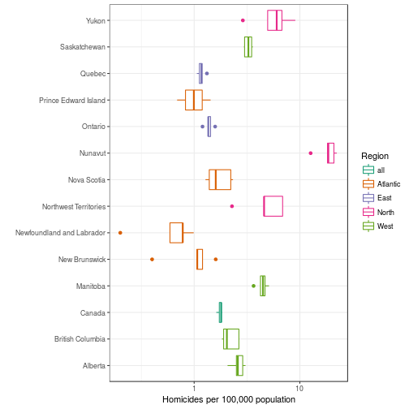

Load data from previous computations:
load("data/CA_homicide.RData")One of the advantages of long format is that it allows us to use some of R’s more powerful graphics tools such as the ggplot2 and lattice packages (and it’s what most statistics packages expect):
library(ggplot2)
theme_set(theme_bw()) ## black-and-white theme
p1 <- ggplot(mdat,aes(Year,Hom_rate,colour=Place))print(p1+geom_line())
plot of chunk ggplot2
We could add both lines and points:
print(p1+geom_line() +geom_point())
plot of chunk ggplot3
Might be better on a log scale, with a sensible y-axis label:
p1L <- p1 + geom_line()+
scale_y_log10()+labs(y="Homicides per 100,000 population")
print(p1L)## Warning: Transformation introduced infinite values in continuous y-axis
plot of chunk ggplot4
Maybe we don’t care about time at all:
b1 <- ggplot(mdat,aes(x=Place,y=Hom_rate,
colour=Region))+
geom_boxplot(outlier.colour=NULL)+ ## set outlier points to same colour
scale_y_log10()+labs(y="Homicides per 100,000 population")
print(b1)## Warning: Transformation introduced infinite values in continuous y-axis## Warning: Removed 4 rows containing non-finite values (stat_boxplot).
plot of chunk boxplot
The labels are horrible. This is less familiar, but not a bad solution …
print(b1+coord_flip()+xlab("")+scale_colour_brewer(palette="Dark2"))## Warning: Transformation introduced infinite values in continuous y-axis## Warning: Removed 4 rows containing non-finite values (stat_boxplot).
plot of chunk coord_flip
======= plot of chunk unnamed-chunk-1
>>>>>>> abe2477fdde086d96189a7dae02f05b117abf085Maybe we want to make our line graph less busy:
print(p1L+facet_wrap(~Region))## Warning: Transformation introduced infinite values in continuous y-axis
plot of chunk facet_wrap
=======
plot of chunk unnamed-chunk-2
>>>>>>> abe2477fdde086d96189a7dae02f05b117abf085We could also code population size by line width:
p2 <- ggplot(mdat,
aes(Year,Hom_rate,colour=Region,size=log(Pop_2011),
group=Place))+geom_line(alpha=0.5)+
scale_y_log10()+labs(y="Homicides per 100,000 population")
print(p2)## Warning: Transformation introduced infinite values in continuous y-axis
plot of chunk plot3
Using the directlabels package (also on GitHub):
library(directlabels)
direct.label(p1L)+
expand_limits(x=2004,y=0.1)## Warning: Transformation introduced infinite values in continuous y-axis
## Warning: Transformation introduced infinite values in continuous y-axis
## Warning: Transformation introduced infinite values in continuous y-axis
plot of chunk directlabels
Still needs work …